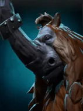
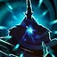

Reverse Polarity
Active ability: Activates on full mana
Magnus changes the property of matter, sucking all enemies to him and stunning them with a powerful slam and dealing damage.
| ★ | ★★ | ★★★ | |
|---|---|---|---|
| RADIUS | 350 | 400 | 500 |
| BASIC STUN | 1.5 | 1.5 | 2 |
| EXTRA STUN PER GRID | 0.5 | ||
| MAGICAL DAMAGE | 150 | 200 | 300 |
| Cooldown (s) | 15 | 12 | 9 |
| Mana cost | 100 | ||
Magnus fights with the fury of the erupting Mt. Joerlak.
Stats
| ★ | ★★ | ★★★ | |
|---|---|---|---|
| Health | 900 | 1800 | 3600 |
| Mana | 100 | 100 | 100 |
| Armor | 7 | 7 | 7 |
| Magic resistance | 5% | 5% | 5% |
| Attack damage | 65–75 | 130–150 | 260–300 |
| Attack interval (s) | 1.5 | 1.5 | 1.5 |
| Attack range | 205 | 205 | 205 |
| Move speed | 500 | 500 | 500 |
 Centaur · Stampede
Centaur · Stampede
- (2) At the start of battle, each Centaur charges toward the square with the most enemies around it. While charging it has +50% move speed and is magic immune, and it stuns enemies it passes (within 205 range) for 1s.
- (4) Every move by your melee pieces (attack range 205 or less) becomes a Stampede charge: faster, magic immune, and stunning enemies they pass for 1s.
 Assassin · Coup de Grace
Assassin · Coup de Grace
At the start of each battle, Assassins leap behind the enemy lineup with their first move. (The guaranteed critical hit after the leap needs the (3) Assassin bonus or higher.)
- (3) Assassins get a 15% chance to crit for 250% damage. Their first hit after the leap always crits.
- (6) Assassins get an extra, separate 15% chance to crit for 400% damage, which stacks with the (3) bonus. The post-leap crit is 250% or 400% at random.
- (9) Assassins can leap again after getting a kill, or when a 5-10 second timer runs out. Every post-leap hit uses the highest crit the piece has (at least 400%).